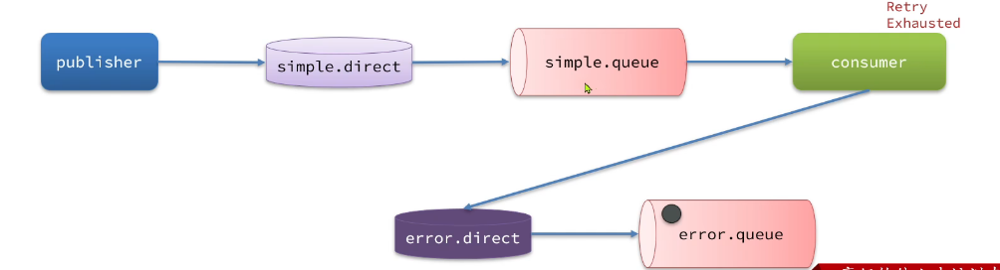

消费者的可靠性
发送端把消息安全送到了 MQ，消费端的风险从投递那一刻开始：
MQ ──① none 模式：投递即删，消费者宕机消息就丢──────────────> 丢
MQ ──② 业务异常被 try-catch 吞掉 → Spring 以为成功 → ACK ──> 丢（重试机制完全失效）
MQ ──③ 重试耗尽后默认策略 = 直接 reject 丢弃────────────────> 丢
MQ ──④ 重试耗尽后 ImmediateRequeue 无限重回队列─────────────> 死循环
MQ ──⑤ 同一条消息被投递 2~N 次（补偿重发/重试重投/宕机重投）→ 重复消费事故
| 风险 | 对应手段 |
|---|---|
| ① 投递即删 | acknowledge-mode: auto |
| ② 吞异常 = 放弃重试机会 | 「绝对原则」：必须把异常抛出 |
| ③④ 重试耗尽的去留 | RepublishMessageRecoverer 转发 |
| ⑤ 重复投递→重复消费 | 三重幂等防线 |
消息安全送达 MQ 之后，怎么保证它一定被「正确处理、只处理一次」
这四层手段层层递进：先保证「处理结果能反馈给 MQ」（确认机制），再保证「失败有机会重来」（重试），再保证「重来不了也别丢」（兜底转发），最后保证「来多少遍结果都一样」（幂等）。
一条消息的消费可靠性之旅
MQ 投递消息
│
├─ ① ack 模式 auto：Spring AOP 监听方法结果 （第一层）
│ 正常 → ack / 异常 → 交给重试
│
├─ ② 本地重试 1s/2s/4s × 3 次 （第二层）
│ 消息不出 MQ unacked，本地线程 sleep 后重调业务
│
├─ ③ 重试耗尽 → RepublishMessageRecoverer （第三层）
│ 转发 error.exchange → error.queue → 落库 PENDING
│ 人工修复 → 删幂等 key + JSON转Map → 重放原交换机
│
└─ ④ 幂等三重防线 （第四层）
SETNX 挡板 → 唯一索引兜底 → 状态机建模
兜住所有路径的重复投递（补偿重发/重试重投/宕机重投）
1. 消费者确认机制
为了确认消费者是否成功处理消息，RabbitMQ提供了消费者确认机制（Consumer Acknowledgement）。即：当消费者处理消息结束后，应该向RabbitMQ发送一个回执，告知RabbitMQ自己消息处理状态。回执有三种可选值：
- ack：成功处理消息，RabbitMQ从队列中删除该消息
- nack：消息处理失败，RabbitMQ需要再次投递消息
- reject：消息处理失败并拒绝该消息，RabbitMQ从队列中删除该消息
一般reject方式用的较少，除非是消息格式有问题，那就是开发问题了。因此大多数情况下我们需要将消息处理的代码通过try catch机制捕获，消息处理成功时返回ack，处理失败时返回nack.
由于消息回执的处理代码比较统一，因此SpringAMQP帮我们实现了消息确认。并允许我们通过配置文件设置ACK处理方式，有三种模式：
none：不处理。即消息投递给消费者后立刻ack，消息会立刻从MQ删除。非常不安全，不建议使用manual：手动模式。需要自己在业务代码中调用api，发送ack或reject，存在业务入侵，但更灵活auto：自动模式。SpringAMQP利用AOP对我们的消息处理逻辑做了环绕增强，当业务正常执行时则自动返回ack. 当业务出现异常时，根据异常判断返回不同结果：- 如果是业务异常，会自动返回
nack； - 如果是消息处理或校验异常（消息本身有问题），自动返回
reject;
关键理解：auto ≠ 「自动成功」。它是 Spring 用 AOP 拿你的方法结果，代替你按 ack/nack 按钮。所以「抛异常」这个动作本身就是「告诉 MQ 我失败了」——这正是重试机制的触发开关。
通过下面的配置可以修改SpringAMQP的ACK处理方式：
spring:
rabbitmq:
listener:
simple:
acknowledge-mode: auto # none / auto / manual
手动确认
第 1 步：yaml 改配置
spring:
rabbitmq:
listener:
simple:
acknowledge-mode: manual # 确认权交给你
retry:
enabled: false # 重要：手动模式下关掉 Spring 本地重试（原因见下）
第 2 步：监听方法自己 ack。方法参数里加上 Channel 和投递标签：
@RabbitListener(queues = MqConstants.SMS_PAY_QUEUE)
public void listenPaySuccess(PaySuccessMessage message,
Channel channel,
@Header(AmqpHeaders.DELIVERY_TAG) long tag) throws IOException {
try {
if (SmsListener.BLACKLIST_MOBILE.equals(message.getMobile())) {
throw new RuntimeException("黑名单手机号，发送失败");
}
// ...正常业务：写短信记录...
channel.basicAck(tag, false); // 成功：确认，broker 删除消息
} catch (Exception e) {
log.error("[手动ACK] 消费失败: {}", e.getMessage());
// 失败：不重回队列（false），队列若配了死信交换机会进死信，否则直接丢弃
channel.basicNack(tag, false, false);
}
}
三个方法的选择：
| 方法 | 语义 |
|---|---|
basicAck(tag, multiple) |
确认。multiple=true 连同之前所有未确认消息一起批量确认 |
basicNack(tag, multiple, requeue) |
否定确认，可批量；requeue=true 重回队列头部 |
basicReject(tag, requeue) |
同 nack 但不能批量，一次只拒一条 |
basicReject(tag, requeue) 是 RabbitMQ 中专门用于拒签单条消息的原生 API 方法。它的作用是显式告知 Broker 当前消息处理失败，并明确指示 Broker 随后该如何处置这条消息。
对于 basicAck 和 basicNack，如果 requeue 为 true，消息会重新回到队列的开头；要是 requeue 为 false，则彻底移出原队列。若队列配置了死信交换机（DLX），消息会转入死信队列；若未配置死信队列，则被直接丢弃。
在日常开发中，如果你只操作单条消息，调用 basicReject(tag, false) 与调用 basicNack(tag, false, false) 效果完全一致。
2. 失败重试机制
当消费者出现异常后，消息会不断requeue（重入队）到队列，再重新发送给消费者。如果消费者再次执行依然出错，消息会再次requeue到队列，再次投递，直到消息处理成功为止。
极端情况就是消费者一直无法执行成功，那么消息requeue就会无限循环，导致mq的消息处理飙升，带来不必要的压力：
当然，上述极端情况发生的概率还是非常低的，不过不怕一万就怕万一。为了应对上述情况Spring又提供了消费者失败重试机制：在消费者出现异常时利用本地重试，而不是无限制的requeue到mq队列。
spring:
rabbitmq:
listener:
simple:
retry:
enabled: true # 开启消费者失败重试
initial-interval: 1000ms # 初识的失败等待时长为1秒
multiplier: 1 # 失败的等待时长倍数，下次等待时长 = multiplier * last-interval
max-attempts: 3 # 最大重试次数
stateless: true # true无状态；false有状态。如果业务中包含事务，这里改为false
重启consumer服务，重复之前的测试。可以发现：
- 消费者在失败后消息没有重新回到MQ无限重新投递，而是在本地重试了3次
- 本地重试3次以后，抛出了
AmqpRejectAndDontRequeueException异常。查看RabbitMQ控制台，发现消息被删除了，说明最后SpringAMQP返回的是reject
结论：
- 开启本地重试时，消息处理过程中抛出异常，不会requeue到队列，而是在消费者本地重试
- 重试达到最大次数后，Spring会返回reject，消息会被丢弃
「本地」重试是什么意思？
传统无重试配置：消费者抛异常 → nack(requeue=true) → 消息回 MQ 队列头部 → 立即重新投递 → 再抛 …（死循环）
本地重试： 消费者抛异常 → 消息不出 MQ 的 unacked 状态，在本地线程 sleep 1s 再调一次业务方法
与生产者 retry 的本质区别
| 生产者 template.retry | 消费者 listener.retry | |
|---|---|---|
| 卡住的是谁 | Tomcat 线程（阻塞 Web 请求） | 消费者本地线程（阻塞的是消费速度，不影响 Web） |
| 失败后果 | 发送失败，靠本地消息表补偿 | 重试耗尽进 error.queue，有 RepublishMessageRecoverer 兜底 |
| 雪崩风险 | 有（线程池耗尽） | 无（消费线程独立于 Web 线程池） |
3. 失败处理策略
在之前的测试中，本地测试达到最大重试次数后，消息会被丢弃。这在某些对于消息可靠性要求较高的业务场景下，显然不太合适了。
因此Spring允许我们自定义重试次数耗尽后的消息处理策略，这个策略是由MessageRecovery接口来定义的，它有3个不同实现：
RejectAndDontRequeueRecoverer：重试耗尽后，直接reject，丢弃消息。默认就是这种方式 （这会导致消息丢失，生产环境极其不推荐！）ImmediateRequeueMessageRecoverer：重试耗尽后，返回nack，消息重新入队 （这会导致死循环，违背了配置本地重试的初衷，不推荐！）RepublishMessageRecoverer：重试耗尽后，将失败消息投递到指定的交换机
比较优雅的一种处理方案是RepublishMessageRecoverer，失败后将消息投递到一个指定的，专门存放异常消息的队列，后续由人工集中处理。

绝对原则：消费者遇到错误时，必须把异常抛出！
@Configuration
public class ErrorMessageConfig {
public static final String ERROR_EXCHANGE = "error.exchange";
public static final String ERROR_QUEUE = "error.queue";
public static final String ERROR_ROUTING_KEY = "error.routing.key";
// 1. 声明异常交换机
@Bean
public DirectExchange errorExchange() {
return new DirectExchange(ERROR_EXCHANGE);
}
// 2. 声明异常队列
@Bean
public Queue errorQueue() {
return new Queue(ERROR_QUEUE);
}
// 3. 绑定异常队列和异常交换机
@Bean
public Binding errorBinding() {
return BindingBuilder.bind(errorQueue()).to(errorExchange()).with(ERROR_ROUTING_KEY);
}
// 4. 配置 RepublishMessageRecoverer，覆盖 Spring 默认的丢弃策略
@Bean
public MessageRecoverer republishMessageRecoverer(RabbitTemplate rabbitTemplate) {
// 参数：RabbitTemplate, 目标交换机名称, 目标路由键
return new RepublishMessageRecoverer(rabbitTemplate, ERROR_EXCHANGE, ERROR_ROUTING_KEY);
}
}
RepublishMessageRecoverer 转发不是简单搬运，它做了两件事：
第一件：给新消息附加「死亡档案」头。
| 头 | 内容 | 用途 |
|---|---|---|
x-exception-message |
最后一次异常的信息（完整堆栈信息，可能极长） | 落库 fail_reason，人工排查的依据 |
x-exception-stacktrace |
完整堆栈 | 定位代码 |
x-original-exchange |
原始交换机 | 人工重放时知道「发回哪去」 |
x-original-routing-key |
原始路由键 | 同上（注意：老版本 spring-amqp 在路由键未变化时不写这个头，读取要给默认值兜底） |
第二件：把原消息从业务队列 ack 删除。 注意这个顺序——先转发成功，再 ack 原消息。
所以 error.queue 链路不会丢消息：转发失败的话原消息还在 unacked，MQ 会重新投递。
完整的、健壮的消息消费流程应该是这样的：
- 消费者收到消息。
- 业务处理失败抛出异常。
- Spring 拦截异常，在本地线程挂起等待，按配置的递增时间（1s, 2s...）重试。
- 重试 3 次仍然失败，Spring 判定此消息彻底无救。
- 触发
RepublishMessageRecoverer，Spring 自动将消息投递到error.queue。 - Spring 给原来的队列发送
ack，将该消息从原队列中删除，防止阻塞。 - 运维人员第二天上班，查阅
error.queue里的死信，修复 Bug 后手动回放处理。
4. 业务幂等性
何为幂等性？
幂等是一个数学概念，用函数表达式来描述是这样的：f(x) = f(f(x))，例如求绝对值函数。
在程序开发中，则是指同一个业务，执行一次或多次对业务状态的影响是一致的。例如：
- 根据id删除数据
- 查询数据
- 新增数据
但数据的更新往往不是幂等的，如果重复执行可能造成不一样的后果。比如：
- 取消订单，恢复库存的业务。如果多次恢复就会出现库存重复增加的情况
- 退款业务。重复退款对商家而言会有经济损失。
所以，我们要尽可能避免业务被重复执行。
然而在实际业务场景中，由于意外经常会出现业务被重复执行的情况，例如：
- 页面卡顿时频繁刷新导致表单重复提交
- 服务间调用的重试
- MQ消息的重复投递
我们在用户支付成功后会发送MQ消息到交易服务，修改订单状态为已支付，就可能出现消息重复投递的情况。如果消费者不做判断，很有可能导致消息被消费多次，出现业务故障。
举例：
- 假如用户刚刚支付完成，并且投递消息到交易服务，交易服务更改订单为已支付状态。
- 由于某种原因，例如网络故障导致生产者没有得到确认，隔了一段时间后重新投递给交易服务。
- 但是，在新投递的消息被消费之前，用户选择了退款，将订单状态改为了已退款状态。
- 退款完成后，新投递的消息才被消费，那么订单状态会被再次改为已支付。业务异常。
要实现幂等性，前提是每一条消息都必须有一个全局唯一的标识（Business ID 或 Message ID），比如订单号 orderId。
1. 数据库唯一索引
利用关系型数据库（MySQL）的 Unique Key 机制来防重。
- 做法： 建立一张独立的
mq_consumed_record（消息消费记录表），包含一个唯一的message_id字段。每次消费消息前，先INSERT一条记录。 - 效果： 如果是重复消息，第二次
INSERT时数据库会报主键冲突异常（DuplicateKeyException）。我们在代码里 catch 住这个异常，直接返回ack给 MQ，告诉它“这条消息之前处理过了，当成功算吧”。 - 优点： 简单粗暴，100% 绝对可靠。DB 的终极防线，最推荐
2. Redis 分布式锁
如果你的系统并发极高，直接把请求打到 MySQL 会导致数据库扛不住，可以引入 Redis。
- 做法： 消费者收到消息后，拿
orderId去 Redis 里执行SETNX(Set if Not eXists) 命令。 - 效果：
- 如果设置成功，说明是第一次消费，放行去执行真正的业务逻辑。
- 如果设置失败，说明已经被别人抢占或者处理过了，直接丢弃（打个日志，给 MQ 发送
ack）。 - 注意： 记得给 Redis 的 Key 设置一个合理的过期时间（比如 24 小时），防止死锁，也节省内存。
3. 状态机 / 乐观锁控制
这种方式不需要额外的表或 Redis，直接在业务数据上做文章。
- 基于状态机： 比如订单有状态：
1-待支付、2-已支付、3-已发货。当收到“支付成功”的消息时，SQL 这样写：UPDATE order SET status = 2 WHERE id = 100 AND status = 1;如果是重复的支付消息，由于第一次执行后状态已经变成了 2，第二次执行时WHERE status = 1就不成立，更新行数为 0，这就实现了幂等。 - 基于版本号 (乐观锁)： 给表加一个
version字段。每次更新version = version + 1 WHERE version = old_version。
企业级标准处理流程
在实际开发中，为了兼顾性能与可靠性，通常会把方案一和方案二结合起来（Redis 挡并发 + MySQL 兜底）：
- 消费者收到消息，提取
业务流水号 (bizId)。 - 去 Redis 执行
SETNX bizId，如果失败，说明重复，直接 ACK 并返回。 - 如果成功，开启数据库事务。
- 检查业务表状态（状态机校验）或插入防重表。若发现已处理，直接 ACK 并返回。
- 执行核心业务逻辑（如加积分、扣库存）。
- 提交事务。
- 如果第 4~6 步发生异常，回滚事务，并删除 Redis 中的 Key（很重要，否则这条消息就再也无法重试了），让 Spring 重试机制接管。
为什么 Redis 挡了还要查库？ Redis 主从切换/宕机重启可能丢数据，MySQL 是最后防线。
为什么异常时必须删 Redis key？ 不删的话下次重试时 SETNX 失败，这条消息就永远无法被处理（卡死）。